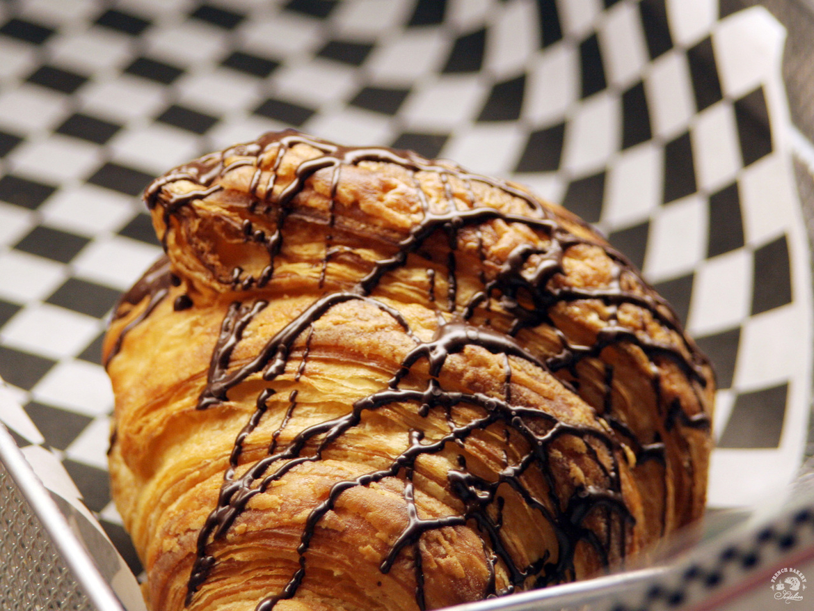
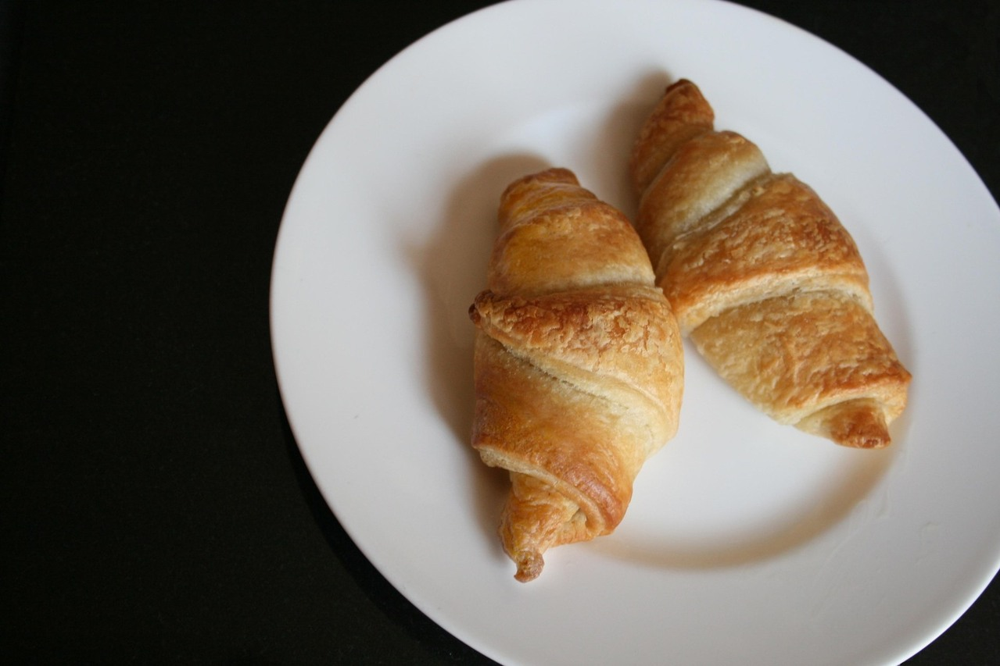
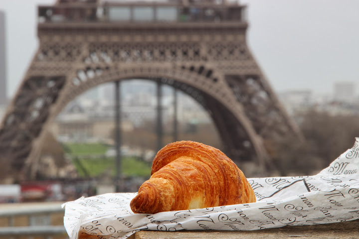
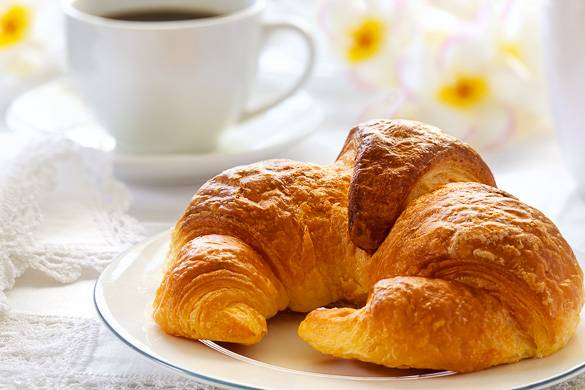

Круассан принято ассоциировать с Францией. Название выпечки - croissant - пришло из французского языка и переводится как «полумесяц». Рогалики с начинкой стали популярными в середине XIX века в Париже с легкой руки австрийского кондитера Августа Цанга. Знакомый всем круассан из слоеного теста появился только в 1920-х годах.

Современный круассан действительно является изобретением парижских пекарей. Однако история круассана началась в далеком XIII веке в Австрии. В литературе упоминаются сладкие рогалики специфической формы под названием Kipferl.
Популярность к этой выпечке пришла гораздо позже – в XVII веке. Круассаны историей возникновения обязаны победе австрийцев над турецким войском. Легенда гласит, что венские пекари, работавшие ночью, услышали, как враг делает подкоп под городские стены, и предупредили стражей. В честь радостного события кондитер Петер Вандлер испек булочки в форме исламского полумесяца.
Немного позже в австрийской столице появилась первая кондитерская, где подавали круассаны вместе с черным кофе по-турецки. А потомки Вандлера получили пожизненные права на изготовление рогаликов.
Интересно, что в это же время изобрели тесто для современных круассанов – история происхождения слоеного теста началась во Франции. Шеф-повар Франсуа Пьер де ла Варен представил публике «паштетное тесто», известное теперь как слоеное.
Как появились булочки-полумесяцы?

Современный круассан действительно является изобретением парижских пекарей. Однако история круассана началась в далеком XIII веке в Австрии. В литературе упоминаются сладкие рогалики специфической формы под названием Kipferl.
Популярность к этой выпечке пришла гораздо позже – в XVII веке. Круассаны историей возникновения обязаны победе австрийцев над турецким войском. Легенда гласит, что венские пекари, работавшие ночью, услышали, как враг делает подкоп под городские стены, и предупредили стражей. В честь радостного события кондитер Петер Вандлер испек булочки в форме исламского полумесяца.
Немного позже в австрийской столице появилась первая кондитерская, где подавали круассаны вместе с черным кофе по-турецки. А потомки Вандлера получили пожизненные права на изготовление рогаликов.
Интересно, что в это же время изобрели тесто для современных круассанов – история происхождения слоеного теста началась во Франции. Шеф-повар Франсуа Пьер де ла Варен представил публике «паштетное тесто», известное теперь как слоеное.
Как круассаны очутились во Франции?
История круассанов во Франции началась только в XVIII или даже в XIX веке. Такие расхождения в датах связаны существованием двух версий: романтической и прагматической.
Согласно первой истории знаменитые булочки с собой в Париж в 1770 году привезла эрцгерцогиня Мария-Антуанетта. Молодая супруга короля Людовика XVI обожала венское лакомство и потребовала от дворцовых поваров научиться его готовить. Со временем круассан стал частью классического французского завтрака среди знати.
Вторая история создания круассана повествует об открытии в Париже в 1839 году Boulangerie Viennoise, то есть «Венской булочной». Хозяином ее был австриец Август Цанг. Благодаря этому заведению во Франции вошла в моду «венская» хрустящая сдоба.
Когда круассаны превратились в символ Франции?

В 1853 году вышла книга «Пищевые субстанции» написанная знаменитым специалистом в области химии Ансельмом Пайеном. В ней впервые упоминаются круассаны как официальный тип хлеба.
Всего через 20 лет «полумесяцы» официально стали традиционной французской выпечкой и вошли в список «блюд и напитков Парижа». Экзотическая сладкая сдоба быстро завоевала французов, а ее австрийское происхождение практически забылось.
Однако на этом история появления круассанов не заканчивается. В 20-е годы XX века парижские пекари закрепили привычный вид и вкус слоеных рогаликов – их начали выпекать из дрожжевого слоеного теста с добавлением масла. Булочки стали делать со всевозможной сладкой и соленой начинкой или вовсе без нее.
Венские и парижские круассаны сегодня объединяет только форма полумесяца и красивые легенды о происхождении.
Насладиться вкусом нежнейших французских круассанов можно в сети пекарен "Sedelice".

Проверочка(1)
Нынешние круассаны делают во множестве видов.
Начиная от классических, из слоеного теста, которые обычно включены в континентальный завтрак в отелях, до более сложных комбинаций и круассанов с начинками. Самыми популярными являются круассаны с шоколадной начинкой, а также с сыром и ветчиной. Круассаны делают из разного вида слоеного теста, добавляя внутрь заварной крем или посыпая миндальной стружкой.
Популяризация круассанов
Круассаны долгое время оставались традиционными именно для французских булочных.
В конце 1970-х гг разработали технологию изготовления полуготовых замороженных круассанов, которые допекались уже на месте даже неквалифицированным персоналом. Таким образом клиенты могли наслаждаться свежайшей выпечкой даже за пределами булочных. В результате теперь около 30 — 40% всех круассанов, продаваемых французскими булочными, продаются в замороженном виде. А сам круассан с его популярностью, где он практически превратился в аналог американского фаст-фуда, стал буквально символом французской кухни.